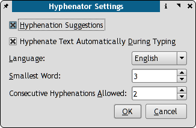
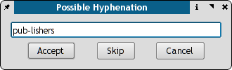

Diese Funktion bereichert die Textformatierung unter Scribus um eine intelligente Steuerung der Silbentrennung. Basierend auf den Regelcodes von Tex und OpenOffice.org verfügt sie über einen erprobten Algorithmus zur Trennung von Silben in Wörtern.
Silbentrennung. Markieren Sie einen Textrahmen, richten Sie den Text nach Ihren Wünschen aus, und klicken Sie in der Menüleiste auf Extras > Silbentrennung. Automatisch bedeutet genau das, was es meint: Aktivieren Sie die "Silbentrennung" aus dem Menü, und sie wird ähnlich einer Absatzvorlage auf den gewählten Textrahmen angewandt. Bei jeder Änderung der Schriftart, Schriftgröße oder des Kernings wird der Text automatisch neu gesetzt und die Silben neu getrennt.
|  |
In den meisten Fällen können Sie die Silbentrennung bei der Voreinstellung belassen: automatisch. Alternativ wählen Sie einen Textrahmen und aktivieren die Silbentrennung per Menü. Sie können Scribus auch veranlassen, die Silbentrennung direkt durchzuführen, während Sie schreiben.
Ist die Silbentrennung auf "manuell" eingestellt, können Sie über die Trennungsvorschläge für jedes Wort selbst entscheiden, wie das folgende Beispiel zeigt.
|  |
Zur Dokumentation gehört eine Beispieldatei namens hyphen.scd.gz, in der unterschiedliche Layout-Möglichkeiten für Textspalten kurz und übersichtlich dargestellt sind.
Das beste Erscheinungsbild erzielen Sie wahrscheinlich, wenn Sie den Text als Blocksatz formatieren.
Gegenwärtig ist die Silbentrennung für folgende Sprachen verfügbar: Katalanisch, Tschechisch, Dänisch, Englisch, Finnisch, Französisch, Deutsch, Griechisch, Irisch (Gälisch), Italienisch, Ungarisch, Litauisch, Polnisch, Portugiesisch, Russisch, Slovakisch, Slowenisch, Spanisch, Schwedisch und Ukrainisch.